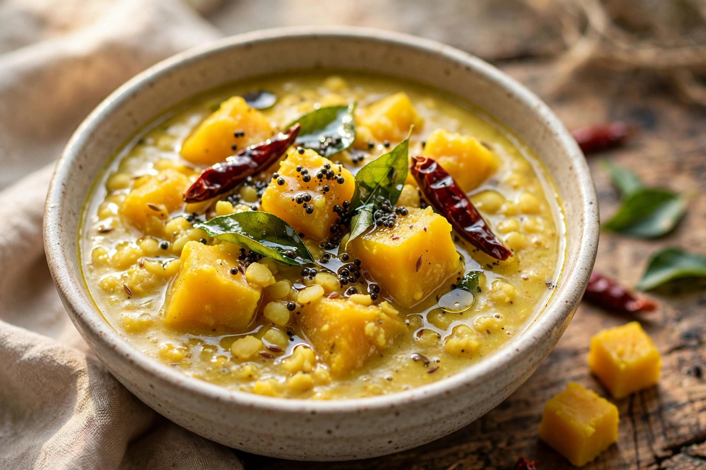

Home / Recipes / South India, especially Tamil Nadu / Parangikai Kootu
Parangikai Kootu
South India, especially Tamil NaduAutumnFoodVegetarianKids love it
AI-assisted · Human-reviewed · Not kitchen-tested
Sign in to save favorites. Sharing instead of copying keeps this library free.

Parangikai Kootu
3–4 servings
3 cups / about 450–500 g yellow pumpkin, peeled and cubed
¼ cup moong dal, cooked
¼ cup freshly grated coconut
½ tsp cumin seeds
¼ tsp turmeric powder
Salt, to taste
Water, as needed
For tempering
1 tsp neutral oil or coconut oil
½ tsp black mustard seeds
1 dried red chili
1 tsp urad dal
1 sprig curry leaves
Method
Cook the moong dal until soft but not completely watery; set aside.
Peel and cube the pumpkin.
Put the pumpkin in a saucepan with enough water to almost cover it. Add turmeric and salt.
Cook until the pumpkin is soft but still holds its shape.
Grind the grated coconut and cumin seeds with a little water into a smooth or slightly coarse paste.
Add the cooked moong dal and coconut-cumin paste to the pumpkin.
Stir gently and simmer for about 2 minutes.
Heat the oil in a small pan.
Add mustard seeds and let them crackle. Add the urad dal, dried chili and curry leaves.
When the tempering is fragrant and the dal is lightly golden, pour it over the kootu.
Mix gently and serve hot with rice.
Sharing instead of copying keeps this library free.
Kids love it
There isn't a distinct traditional children's parangikai kootu; the dish is naturally adaptable — make the coconut-cumin paste without chili, keep the pumpkin very soft, and mash some of the pumpkin and dal together before serving over rice. Record as “Kid-friendly adaptation: yes; established separate kid version: no.”
“Kids love it” means flavors young taste buds enjoy — not safety for every child. Adults must supervise knives, heat and appliances — written for adults to prepare with children.
Story behind this dish
“Kootu” is less a single fixed recipe than a family of South Indian vegetable-and-lentil preparations. The vegetable can change while the basic idea remains: a vegetable is combined with dal and a coconut/spice mixture. And parangikai is particularly useful for a seasonal library because the same yellow pumpkin can move across the meal in very different forms — from savory kootu and sambar to sweets and halwa.
Please read: this recipe is ai-assisted · human-reviewed · not kitchen-tested. It was researched with AI assistance, reviewed by a human, and never tested in a kitchen — times, temperatures and quantities may need adjusting. Always use a food thermometer and follow current guidance from authorities such as the USDA. If something looks or smells wrong, don’t eat it. Allergies: ingredient lists are informational and may be incomplete — read every product label yourself, and if you are unsure, don’t eat it. This is not medical or nutritional advice.
Tried it? Tell us.
Submissions are read by our team before anything appears publicly.